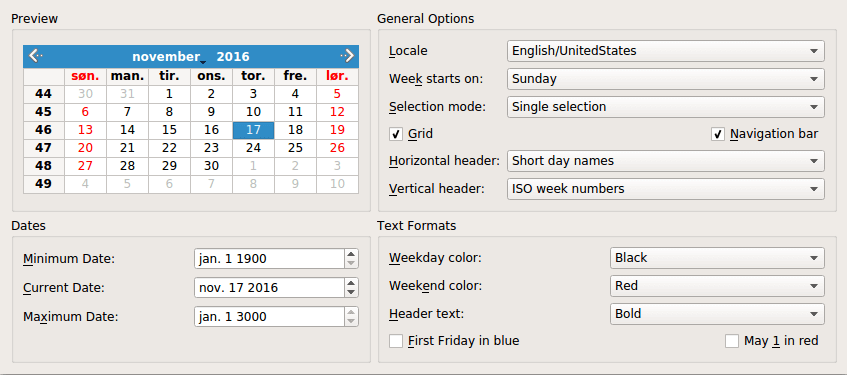

Calendar Widget Example
The Calendar Widget example shows use of QCalendarWidget.

QCalendarWidget displays one calendar month at a time and lets the user select a date. The calendar consists of four components: a navigation bar that lets the user change the month that is displayed, a grid where each cell represents one day in the month, and two headers that display weekday names and week numbers.
The Calendar Widget example displays a QCalendarWidget and lets the user configure its appearance and behavior using QComboBoxes, QCheckBoxes, and QDateEdits. In addition, the user can influence the formatting of individual dates and headers.
The properties of the QCalendarWidget are summarized in the table below.
| Property | Description |
|---|---|
| selectedDate | The currently selected date. |
| minimumDate | The earliest date that can be selected. |
| maximumDate | The latest date that can be selected. |
| firstDayOfWeek | The day that is displayed as the first day of the week (usually Sunday or Monday). |
| gridVisible | Whether the grid should be shown. |
| selectionMode | Whether the user can select a date or not. |
| horizontalHeaderFormat | The format of the day names in the horizontal header (e.g., "M", "Mon", or "Monday"). |
| verticalHeaderFormat | The format of the vertical header. |
| navigationBarVisible | Whether the navigation bar at the top of the calendar widget is shown. |
The example consists of one class, Window, which creates and lays out the QCalendarWidget and the other widgets that let the user configure the QCalendarWidget.
Window Class Definition
Here is the definition of the Window class:
class Window : public QWidget { Q_OBJECT public: Window(QWidget *parent = nullptr); private slots: void localeChanged(int index); void firstDayChanged(int index); void selectionModeChanged(int index); void horizontalHeaderChanged(int index); void verticalHeaderChanged(int index); void selectedDateChanged(); void minimumDateChanged(QDate date); void maximumDateChanged(QDate date); void weekdayFormatChanged(); void weekendFormatChanged(); void reformatHeaders(); void reformatCalendarPage(); private: void createPreviewGroupBox(); void createGeneralOptionsGroupBox(); void createDatesGroupBox(); void createTextFormatsGroupBox(); QComboBox *createColorComboBox(); QGroupBox *previewGroupBox; QGridLayout *previewLayout; QCalendarWidget *calendar; QGroupBox *generalOptionsGroupBox; QLabel *localeLabel; QLabel *firstDayLabel; ... QCheckBox *mayFirstCheckBox; };
As is often the case with classes that represent self-contained windows, most of the API is private. We will review the private members as we stumble upon them in the implementation.
Window Class Implementation
Let's now review the class implementation, starting with the constructor:
Window::Window(QWidget *parent) : QWidget(parent) { createPreviewGroupBox(); createGeneralOptionsGroupBox(); createDatesGroupBox(); createTextFormatsGroupBox(); QGridLayout *layout = new QGridLayout; layout->addWidget(previewGroupBox, 0, 0); layout->addWidget(generalOptionsGroupBox, 0, 1); layout->addWidget(datesGroupBox, 1, 0); layout->addWidget(textFormatsGroupBox, 1, 1); layout->setSizeConstraint(QLayout::SetFixedSize); setLayout(layout); previewLayout->setRowMinimumHeight(0, calendar->sizeHint().height()); previewLayout->setColumnMinimumWidth(0, calendar->sizeHint().width()); setWindowTitle(tr("Calendar Widget")); }
We start by creating the four QGroupBoxes and their child widgets (including the QCalendarWidget) using four private create...GroupBox() functions, described below. Then we arrange the group boxes in a QGridLayout.
We set the grid layout's resize policy to QLayout::SetFixedSize to prevent the user from resizing the window. In that mode, the window's size is set automatically by QGridLayout based on the size hints of its contents widgets.
To ensure that the window isn't automatically resized every time we change a property of the QCalendarWidget (for example, hiding the navigation bar, the vertical header, or the grid), we set the minimum height of row 0 and the minimum width of column 0 to the initial size of the QCalendarWidget.
Let's move on to the createPreviewGroupBox() function:
void Window::createPreviewGroupBox() { previewGroupBox = new QGroupBox(tr("Preview")); calendar = new QCalendarWidget; calendar->setMinimumDate(QDate(1900, 1, 1)); calendar->setMaximumDate(QDate(3000, 1, 1)); calendar->setGridVisible(true); connect(calendar, &QCalendarWidget::currentPageChanged, this, &Window::reformatCalendarPage); previewLayout = new QGridLayout; previewLayout->addWidget(calendar, 0, 0, Qt::AlignCenter); previewGroupBox->setLayout(previewLayout); }
The Preview group box contains only one widget: the QCalendarWidget. We set it up, connect its currentPageChanged() signal to our reformatCalendarPage() slot to make sure that every new page gets the formatting specified by the user.
The createGeneralOptionsGroupBox() function is somewhat large and several widgets are set up in the same way. We will look at parts of its implementation here and skip the rest:
void Window::createGeneralOptionsGroupBox() { generalOptionsGroupBox = new QGroupBox(tr("General Options")); localeCombo = new QComboBox; int curLocaleIndex = -1; int index = 0; for (int _lang = QLocale::C; _lang <= QLocale::LastLanguage; ++_lang) { QLocale::Language lang = static_cast<QLocale::Language>(_lang); const auto locales = QLocale::matchingLocales(lang, QLocale::AnyScript, QLocale::AnyTerritory); for (auto loc : locales) { QString label = QLocale::languageToString(lang); auto territory = loc.territory(); label += QLatin1Char('/'); label += QLocale::territoryToString(territory); if (locale().language() == lang && locale().territory() == territory) curLocaleIndex = index; localeCombo->addItem(label, loc); ++index; } } if (curLocaleIndex != -1) localeCombo->setCurrentIndex(curLocaleIndex); localeLabel = new QLabel(tr("&Locale")); localeLabel->setBuddy(localeCombo); firstDayCombo = new QComboBox; firstDayCombo->addItem(tr("Sunday"), Qt::Sunday); firstDayCombo->addItem(tr("Monday"), Qt::Monday); firstDayCombo->addItem(tr("Tuesday"), Qt::Tuesday); firstDayCombo->addItem(tr("Wednesday"), Qt::Wednesday); firstDayCombo->addItem(tr("Thursday"), Qt::Thursday); firstDayCombo->addItem(tr("Friday"), Qt::Friday); firstDayCombo->addItem(tr("Saturday"), Qt::Saturday); firstDayLabel = new QLabel(tr("Wee&k starts on:")); firstDayLabel->setBuddy(firstDayCombo); ...
We start with the setup of the Week starts on combobox. This combobox controls which day should be displayed as the first day of the week.
The QComboBox class lets us attach user data as a QVariant to each item. The data can later be retrieved with QComboBox's itemData() function. QVariant doesn't directly support the Qt::DayOfWeek data type, but it supports int, and C++ will happily convert any enum value to int.
...
connect(localeCombo, &QComboBox::currentIndexChanged,
this, &Window::localeChanged);
connect(firstDayCombo, &QComboBox::currentIndexChanged,
this, &Window::firstDayChanged);
connect(selectionModeCombo, &QComboBox::currentIndexChanged,
this, &Window::selectionModeChanged);
connect(gridCheckBox, &QCheckBox::toggled,
calendar, &QCalendarWidget::setGridVisible);
connect(navigationCheckBox, &QCheckBox::toggled,
calendar, &QCalendarWidget::setNavigationBarVisible);
connect(horizontalHeaderCombo, &QComboBox::currentIndexChanged,
this, &Window::horizontalHeaderChanged);
connect(verticalHeaderCombo, &QComboBox::currentIndexChanged,
this, &Window::verticalHeaderChanged);
...
After having created the widgets, we connect the signals and slots. We connect the comboboxes to private slots of Window or to public slots provided by QComboBox.
...
firstDayChanged(firstDayCombo->currentIndex());
selectionModeChanged(selectionModeCombo->currentIndex());
horizontalHeaderChanged(horizontalHeaderCombo->currentIndex());
verticalHeaderChanged(verticalHeaderCombo->currentIndex());
}
At the end of the function, we call the slots that update the calendar to ensure that the QCalendarWidget is synchronized with the other widgets on startup.
Let's now take a look at the createDatesGroupBox() private function:
void Window::createDatesGroupBox() { datesGroupBox = new QGroupBox(tr("Dates")); minimumDateEdit = new QDateEdit; minimumDateEdit->setDisplayFormat("MMM d yyyy"); minimumDateEdit->setDateRange(calendar->minimumDate(), calendar->maximumDate()); minimumDateEdit->setDate(calendar->minimumDate()); minimumDateLabel = new QLabel(tr("&Minimum Date:")); minimumDateLabel->setBuddy(minimumDateEdit); currentDateEdit = new QDateEdit; currentDateEdit->setDisplayFormat("MMM d yyyy"); currentDateEdit->setDate(calendar->selectedDate()); currentDateEdit->setDateRange(calendar->minimumDate(), calendar->maximumDate()); currentDateLabel = new QLabel(tr("&Current Date:")); currentDateLabel->setBuddy(currentDateEdit); maximumDateEdit = new QDateEdit; maximumDateEdit->setDisplayFormat("MMM d yyyy"); maximumDateEdit->setDateRange(calendar->minimumDate(), calendar->maximumDate()); maximumDateEdit->setDate(calendar->maximumDate()); maximumDateLabel = new QLabel(tr("Ma&ximum Date:")); maximumDateLabel->setBuddy(maximumDateEdit);
In this function, we create the Minimum Date, Maximum Date, and Current Date editor widgets, which control the calendar's minimum, maximum, and selected dates. The calendar's minimum and maximum dates have already been set in createPrivewGroupBox(); we can then set the widgets default values to the calendars values.
connect(currentDateEdit, &QDateEdit::dateChanged,
calendar, &QCalendarWidget::setSelectedDate);
connect(calendar, &QCalendarWidget::selectionChanged,
this, &Window::selectedDateChanged);
connect(minimumDateEdit, &QDateEdit::dateChanged,
this, &Window::minimumDateChanged);
connect(maximumDateEdit, &QDateEdit::dateChanged,
this, &Window::maximumDateChanged);
...
}
We connect the currentDateEdit's dateChanged() signal directly to the calendar's setSelectedDate() slot. When the calendar's selected date changes, either as a result of a user action or programmatically, our selectedDateChanged() slot updates the Current Date editor. We also need to react when the user changes the Minimum Date and Maximum Date editors.
Here is the createTextFormatsGroup() function:
void Window::createTextFormatsGroupBox() { textFormatsGroupBox = new QGroupBox(tr("Text Formats")); weekdayColorCombo = createColorComboBox(); weekdayColorCombo->setCurrentIndex( weekdayColorCombo->findText(tr("Black"))); weekdayColorLabel = new QLabel(tr("&Weekday color:")); weekdayColorLabel->setBuddy(weekdayColorCombo); weekendColorCombo = createColorComboBox(); weekendColorCombo->setCurrentIndex( weekendColorCombo->findText(tr("Red"))); weekendColorLabel = new QLabel(tr("Week&end color:")); weekendColorLabel->setBuddy(weekendColorCombo);
We set up the Weekday Color and Weekend Color comboboxes using createColorCombo(), which instantiates a QComboBox and populates it with colors ("Red", "Blue", etc.).
headerTextFormatCombo = new QComboBox;
headerTextFormatCombo->addItem(tr("Bold"));
headerTextFormatCombo->addItem(tr("Italic"));
headerTextFormatCombo->addItem(tr("Plain"));
headerTextFormatLabel = new QLabel(tr("&Header text:"));
headerTextFormatLabel->setBuddy(headerTextFormatCombo);
firstFridayCheckBox = new QCheckBox(tr("&First Friday in blue"));
mayFirstCheckBox = new QCheckBox(tr("May &1 in red"));
The Header Text Format combobox lets the user change the text format (bold, italic, or plain) used for horizontal and vertical headers. The First Friday in blue and May 1 in red check box affect the rendering of specific dates.
connect(weekdayColorCombo, &QComboBox::currentIndexChanged,
this, &Window::weekdayFormatChanged);
connect(weekdayColorCombo, &QComboBox::currentIndexChanged,
this, &Window::reformatCalendarPage);
connect(weekendColorCombo, &QComboBox::currentIndexChanged,
this, &Window::weekendFormatChanged);
connect(weekendColorCombo, &QComboBox::currentIndexChanged,
this, &Window::reformatCalendarPage);
connect(headerTextFormatCombo, &QComboBox::currentIndexChanged,
this, &Window::reformatHeaders);
connect(firstFridayCheckBox, &QCheckBox::toggled,
this, &Window::reformatCalendarPage);
connect(mayFirstCheckBox, &QCheckBox::toggled,
this, &Window::reformatCalendarPage);
We connect the check boxes and comboboxes to various private slots. The First Friday in blue and May 1 in red check boxes are both connected to reformatCalendarPage(), which is also called when the calendar switches month.
...
reformatHeaders();
reformatCalendarPage();
}
At the end of createTextFormatsGroupBox(), we call private slots to synchronize the QCalendarWidget with the other widgets.
We're now done reviewing the four create...GroupBox() functions. Let's now take a look at the other private functions and slots.
QComboBox *Window::createColorComboBox() { QComboBox *comboBox = new QComboBox; comboBox->addItem(tr("Red"), QColor(Qt::red)); comboBox->addItem(tr("Blue"), QColor(Qt::blue)); comboBox->addItem(tr("Black"), QColor(Qt::black)); comboBox->addItem(tr("Magenta"), QColor(Qt::magenta)); return comboBox; }
In createColorCombo(), we create a combobox and populate it with standard colors. The second argument to QComboBox::addItem() is a QVariant storing user data (in this case, QColor objects).
This function was used to set up the Weekday Color and Weekend Color comboboxes.
void Window::firstDayChanged(int index) { calendar->setFirstDayOfWeek(Qt::DayOfWeek( firstDayCombo->itemData(index).toInt())); }
When the user changes the Week starts on combobox's value, firstDayChanged() is invoked with the index of the combobox's new value. We retrieve the custom data item associated with the new current item using itemData() and cast it to a Qt::DayOfWeek.
selectionModeChanged(), horizontalHeaderChanged(), and verticalHeaderChanged() are very similar to firstDayChanged(), so they are omitted.
void Window::selectedDateChanged() { currentDateEdit->setDate(calendar->selectedDate()); }
The selectedDateChanged() updates the Current Date editor to reflect the current state of the QCalendarWidget.
void Window::minimumDateChanged(QDate date) { calendar->setMinimumDate(date); maximumDateEdit->setDate(calendar->maximumDate()); }
When the user changes the minimum date, we tell the QCalenderWidget. We also update the Maximum Date editor, because if the new minimum date is later than the current maximum date, QCalendarWidget will automatically adapt its maximum date to avoid a contradicting state.
void Window::maximumDateChanged(QDate date) { calendar->setMaximumDate(date); minimumDateEdit->setDate(calendar->minimumDate()); }
maximumDateChanged() is implemented similarly to minimumDateChanged().
void Window::weekdayFormatChanged() { QTextCharFormat format; format.setForeground(qvariant_cast<QColor>( weekdayColorCombo->itemData(weekdayColorCombo->currentIndex()))); calendar->setWeekdayTextFormat(Qt::Monday, format); calendar->setWeekdayTextFormat(Qt::Tuesday, format); calendar->setWeekdayTextFormat(Qt::Wednesday, format); calendar->setWeekdayTextFormat(Qt::Thursday, format); calendar->setWeekdayTextFormat(Qt::Friday, format); }
Each combobox item has a QColor object as user data corresponding to the item's text. After fetching the colors from the comboboxes, we set the text format of each day of the week.
The text format of a column in the calendar is given as a QTextCharFormat, which besides the foreground color lets us specify various character formatting information. In this example, we only show a subset of the possibilities.
void Window::weekendFormatChanged() { QTextCharFormat format; format.setForeground(qvariant_cast<QColor>( weekendColorCombo->itemData(weekendColorCombo->currentIndex()))); calendar->setWeekdayTextFormat(Qt::Saturday, format); calendar->setWeekdayTextFormat(Qt::Sunday, format); }
weekendFormatChanged() is the same as weekdayFormatChanged(), except that it affects Saturday and Sunday instead of Monday to Friday.
void Window::reformatHeaders() { QString text = headerTextFormatCombo->currentText(); QTextCharFormat format; if (text == tr("Bold")) format.setFontWeight(QFont::Bold); else if (text == tr("Italic")) format.setFontItalic(true); else if (text == tr("Green")) format.setForeground(Qt::green); calendar->setHeaderTextFormat(format); }
The reformatHeaders() slot is called when the user changes the text format of the headers. We compare the current text of the Header Text Format combobox to determine which format to apply. (An alternative would have been to store QTextCharFormat values alongside the combobox items.)
void Window::reformatCalendarPage() { QTextCharFormat mayFirstFormat; const QDate mayFirst(calendar->yearShown(), 5, 1); QTextCharFormat firstFridayFormat; QDate firstFriday(calendar->yearShown(), calendar->monthShown(), 1); while (firstFriday.dayOfWeek() != Qt::Friday) firstFriday = firstFriday.addDays(1); if (firstFridayCheckBox->isChecked()) { firstFridayFormat.setForeground(Qt::blue); } else { // Revert to regular colour for this day of the week. Qt::DayOfWeek dayOfWeek(static_cast<Qt::DayOfWeek>(firstFriday.dayOfWeek())); firstFridayFormat.setForeground(calendar->weekdayTextFormat(dayOfWeek).foreground()); } calendar->setDateTextFormat(firstFriday, firstFridayFormat); // When it is checked, "May First in Red" always takes precedence over "First Friday in Blue". if (mayFirstCheckBox->isChecked()) { mayFirstFormat.setForeground(Qt::red); } else if (!firstFridayCheckBox->isChecked() || firstFriday != mayFirst) { // We can now be certain we won't be resetting "May First in Red" when we restore // may 1st's regular colour for this day of the week. Qt::DayOfWeek dayOfWeek(static_cast<Qt::DayOfWeek>(mayFirst.dayOfWeek())); calendar->setDateTextFormat(mayFirst, calendar->weekdayTextFormat(dayOfWeek)); } calendar->setDateTextFormat(mayFirst, mayFirstFormat); }
In reformatCalendarPage(), we set the text format of the first Friday in the month and May 1 in the current year. The text formats that are actually used depend on which check boxes are checked and what the weekday/weekend formats are.
QCalendarWidget lets us set the text format of individual dates with the setDateTextFormat(). We chose to set the date formats when the calendar page changes - i.e. a new month is displayed - and when the weekday/weekend format is changed. We check which of the mayFirstCheckBox and firstDayCheckBox, if any, are checked and set the text formats accordingly.